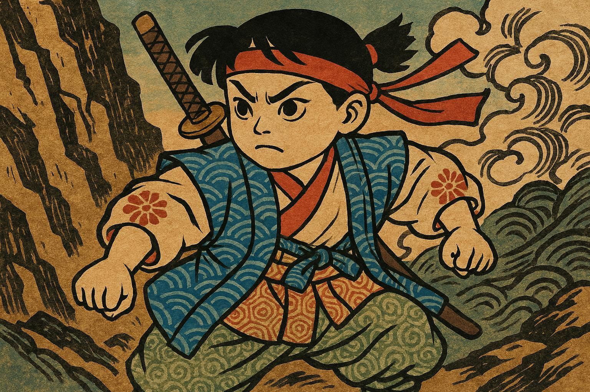

Momotaro
Virsikupoiss
エストニア語で読む「桃太郎」
Elasid kord vanaisa ja vanaema. Vanaisa läks mägedesse puid raiuma ja vanaema läks jõe äärde riideid pesema.
むかしむかし、あるところに、おじいさんとおばあさんが住んでいました。おじいさんは山へしば刈りに、おばあさんは川へ洗濯に行きました。
Kui vanaema pesu pesi, uhtus jõgi kohale hiiglasliku virsiku. "Oi, kui suur virsik! Plirts-plärts, plirts-plärts!"
おばあさんが洗濯をしていると、川上から大きな桃が流れてきました。「まあ、なんて大きな桃かしら！ ドンブラコ、ドンブラコ！」
Kui nad tahtsid virsikut pooleks lõigata, hüppas sealt välja tubli poiss! "Ohhoo, milline vapper beebi!" Nad panid talle nimeks Momotaro.
おじいさんとおばあさんが桃を割ろうとすると、中から元気な男の子が飛び出しました。「わあ、元気な赤ちゃんいだ！」二人は桃太郎と名付けました。
Momotaro sõi palju ning kasvas kiiresti suureks ja tugevaks. Iga päev tõstis ta raskeid kive ja harjutas hoolega mõõgavõitlust.
桃太郎はモリモリ食べて、あっという間に大きく、強くなりました。毎日、重い岩を持ち上げて、剣の練習を一生懸命しました。
.jpg)
"Vanaisa, vanaema. Ma lähen Kurjade Kolli Saarele ja alistan halvad kollid!" ütles Momotaro julgelt.
「おじいさん、おばあさん。僕は鬼ヶ島へ行って、悪い鬼を退治してきます！」桃太郎は勇気を持って言いました。
.jpg)
Vanaema tegi talle maailma parimad kibi-dango pallid. "Võta need kaasa. Need annavad sulle palju jõudu."
おばあさんは、日本一の「きびだんご」を作ってくれました。「これを持ってお行き。力が湧いてくるよ。」
.jpg)
Teel kohtas ta koera. "Momotaro, kuhu sa lähed? Anna mulle üks kibi-dango ja ma tulen sinuga kaasa!"
村を出ると、イヌがやってきました。「桃太郎さん、どこへ行くの？ きびだんごを一つくれたら、お供します！」
.jpg)
Järgmiseks kohtas ta metsas ahvi. "Võta mind ka kampa! Ma olen osav ronija." Momotaro andis ka ahvile ühe palli.
次に山の中でサルに会いました。「僕も仲間に入れてよ！ 木登りは得意なんだ。」桃太郎はサルにも団子をあげました。
Viimasena lendas taevast alla faasan. "Ma otsin kollid taevast üles!" Nüüd oli neil koos maailma tugevaim meeskond.
最後に、美しいキジが空から降りてきました。「僕が空から鬼を見つけるよ！」これで、最強のチームが揃いました。
.jpg)
Momotaro ja tema sõbrad sõitsid väikese paadiga üle tormise mere. "Sõbrad, saar on juba lähedal. Kas olete valmis?"
桃太郎たちは小さな舟に乗って、荒い海を渡りました。「みんな、鬼ヶ島はもうすぐだ。準備はいいか！」
.jpg)
Viimaks jõudsid nad saarele. Nende ees seisis hiiglaslik must värav. "Koer, ründa väravat! Ahv, roni üle müüri!"
ついに鬼ヶ島に着きました。目の前には、真っ黒で巨大な門がそびえ立っています。「イヌは門を叩け、サルは塀を登れ！」
"Rünnakule!" nad tungisid kolli lossi. Koer hammustas, ahv küünistas ja faasan nokkis halbu kolle.
「突撃だー！」桃太郎たちは鬼の城へ飛び込みました。犬は噛みつき、猿はひっかき、キジは突っつきました。
.jpg)
Momotaro võitles kõige suurema punase kolliga. "Ei! Jaa!" Momotaro mõõk välkus ja lõpuks ta võitis kolli.
桃太郎は一番大きな赤鬼と戦いました。「えい！ やあ！」桃太郎の剣が光り、ついに鬼を倒しました。
.jpg)
Kollid nutsid ja palusid andeks. "Palun vabandust! Me anname kõik aarded tagasi. Me ei tee enam kunagi paha."
鬼たちは涙を流して謝りました。「ごめんなさい！ 宝物は全部返します。もう悪いことはしません。」
Momotaro naasis külla koos paljude aaretega. Vanaisa ja vanaema olid väga õnnelikud. Nad elasid õnnelikult elu lõpuni.
桃太郎たちは宝物を積んで村に帰りました。おじいさんとおばあさんは大喜び。みんなで幸せに暮らしました。